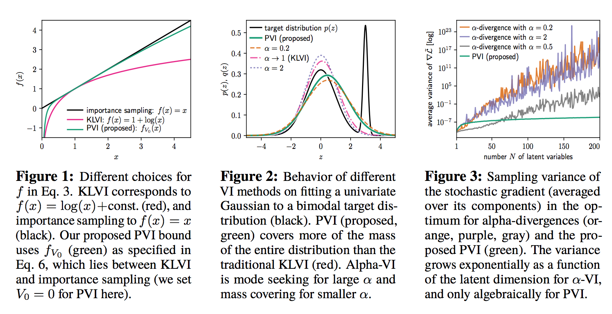

Perturbative Black Box Variational Inference
Вводная
Выбор метрики оптимизации сильно влияет результат. То же самое происходит в вариационном байесовском выводе, работы вроде alpha-Divergence это подтверждают. Что еще хочется от метрики, так это небольшую дисперсию градиентов. Например, KL дивергенция обладает этим свойством, в то время как \(\alpha\)-Divergence не всегда, зависит от альфы. В этой работе традиционный вариационный вывод рассматривается с другой точки зрения, которая помогает улучшить существующие методы. Как будет показано, всеми любимая KL дивергенция - это частный случай предложенного метода. Более того, в экспериментах показывается, что с увеличением размерности дисперсия градиентов лосса растет не так сильно.
VI as biased importance sampling
Рассмотрим традиционную постановку байесовского вывода: \[p(z|\mathcal{D}) = \frac{p(\mathcal{D}|z)p(z)}{p(\mathcal{D})}\]
В байесовском вариационном выводе обычно ищется приближение \(p(z|\mathcal{D})\) в виде параметрического распределения \(q_{\lambda}(z)\) путём максимизации Evidence, а точнее нижней оценки на неё. На этой же идее основывается и эта работа.
Всегда можно найти Evidence с помощью importance sampling, используя \[ p(\mathcal{D}) = \int {p(\mathcal{D}|z)p(z)dz} = \int{\frac{q_{\lambda}(z)p(\mathcal{D}|z)p(z)}{q_{\lambda}(z)}dz} \]
Обозначим \(V = \log{q_{\lambda}(z)} - \log{p(z, \mathcal{D})}\), Interaction Energy в терминологии авторов. Тогда выражение выше переписывается как
\[ p(\mathcal{D}) = \int{q_{\lambda}(z)e^{-V(z)}dz} \]
Вспомним и применим неравенство Йенсена. Если функция \(f\) будет выпуклой и для \(\forall x>0 \Rightarrow f(x)\le x\) \[p(\mathcal{D}) \ge f(p(\mathcal{D})) \ge \mathbb{E}_{q_{\lambda}(z)}f(e^{-V(z)})=\mathcal{L}_f(\lambda)\]
- Если \(f(e^{-V})=\log(e^{-V})\), то мы получим стандартную нижнюю оценку через \(KL\)
- Eсли \(f(e^{-V}) = e^{-(1-\alpha)V}\), то получим вывод через alpha-Divergence
Идея авторов – разложить \(e^{-V}\) в ряд тейлора вокруг некоторой \(-V_0\) \[f_{V0}(e^{-V}) = e^{-V_0}(1+(V_0-V)+\frac{1}{2}(V_0-V)^2+\frac{1}{6}(V_0-V)^3 + \dots)\]
Конечный ряд с нечетным количеством членов будет давать нижнюю оценку, т.к. функция обладает необходимыми свойствами.
Вся соль в \(V_0\), который появляется в этой записи – непонятно, откуда его брать. Предлагается считать его вспомогательной величиной, которая тоже настраивается в процессе обучения.
Еще одна сложность появляется в градиентах. Если оставлять \(e^{-V_0}\), то это может привести к проблемам стабильности вычислений, заранее не ясно, какой должна быть \(V_0\) и, более того, это обучаемый параметр. Поэтому предлагается использовать оценку \(\tilde{\mathcal{L}}=e^{V_0}\mathcal{L}\), и тогда \(e^{-V_0}\) сократится. С градиентами происходит следующее: \[\begin{align} \frac{\partial\mathcal{L}}{\partial \lambda} \propto & \frac{\partial\tilde{\mathcal{L}}}{\partial \lambda} \\ \frac{\partial\mathcal{L}}{\partial V_0} \propto & \frac{\partial\tilde{\mathcal{L}}}{\partial V_0} - \tilde{\mathcal{L}} \end{align}\]Если учесть преобразования градиентов, то получится избежать проблемы с численной стабильностью.
Эксперименты
Экперименты многообещающие. Авторы уменьшили дисперсию лосса для моделей с большим числом параметров, а, значит, и дисперсию стохастических градиентов. 
График 3
Использовался гауссовский процесс для аппроксимации зашумленной синусоиды. Для каждого N случайно генерировались N точек, для которых имелись наблюдения, и N точек без наблюдений. Последние определяли количество скрытых переменных по мнению авторов. Затем они делали вывод на латентные переменные используя \(\alpha\)-Divergence и PBVI. Этим они хотели показать, что дисперсия градиентов в их методе менее зависит от числа скрытых переменных, чем в \(\alpha\)-Divergence. Отсутствие в сравнении KLVI намекает, что сравнивать там нечего или KL лучше в плане дисперсии. Авторы это не прокомментировали в статье.
График 6
Наконец-то сравнение с KLVI! Здесь явно видно, когда от их метода есть толк. При недостаточном количестве данных действительно имеет смысл использовать более точную оценку на Evidence. Однако, при большом количестве данных авторы замечают, что их метод эквивалентен KLVI. Однако про дисперсию градиентов и скорость сходимости ни слова (скорее всего должна быть сопоставимой). И да, на VAE довольно сомнительно сравнивать, так как скорее всего использовался попиксельный лосс, который не соответствует задаче. Было бы куда интереснее посмотреть, как получается решать задачу классификации на CIFAR10.
Более того, им приходится вводить дополнительную штуку как inference network на \(V_0\), которая для каждого экземпляра данных ищет свой \(V_{0i}\). Это важная деталь, которая настораживает, судя по всему подбор индивидуальной \(V_{0i}\) может давать результаты лучше. Вполне вероятно, без этого усложнения результат не сильно отличался от бейзлайна.